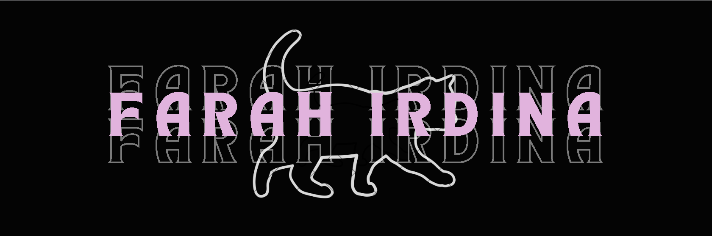

| Time/Day | Monday | Tuesday | Wednesday | Thursday |
|---|---|---|---|---|
| 09.00 am - 09.50 am | Tilawah al-Quran II | |||
| 10.00 am - 11.20 am | Digital Systems Fundamental | Web Technologies | Digital Systems Fundamental | Web Technologies |
| 11.20 am - 12.50 pm | ||||
| 12.50 pm - 2.00 pm | ||||
| 2.00 pm - 3.20 pm | Ethics and Fiqh of Contemporary Issues | Operating Systems | Ethics and Fiqh of Contemporary Issues | Operating Systems |
| 3.30 pm - 4.50 pm | English for Academic Writing | Human Computer Interaction | English for Academic Writing | Human Computer Interaction |
| 08.00 pm-10.00 pm | Family Management |

Farah's world